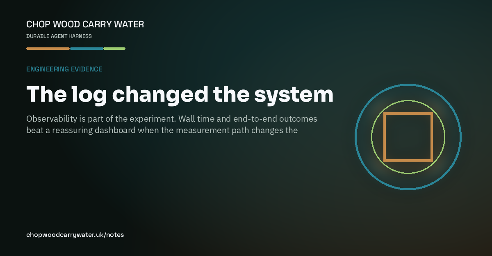

Engineering evidence · 15th August 2026
The log changed the system
Observability is part of the experiment. Wall time and end-to-end outcomes beat a reassuring dashboard when the measurement path changes the target.

A busy week on real hardware left me with an uncomfortable reminder: the act of measuring can become the fault. High-rate serial logging consumed enough time to distort the behaviour we were trying to understand. The USB path could then drop or garble some of that output, so the record looked authoritative while being incomplete.
A second trap was choosing the most attractive number. A CPU percentage from a trace told part of the story, but it did not explain the end-to-end rate. Wall-time counters around the actual transfer path did. Once those existed, the bottleneck moved from a vague system impression to a specific stage we could test.
That changes how I want agents to work. A dashboard is evidence only when we understand what it measures, what it perturbs, and what it can lose. The useful loop is source event to completed outcome, with counters at the boundaries and a second measurement path when the first one is suspect.
The wider lesson is not limited to embedded systems. Logs, traces, browser audits and model evaluations are all instruments. If the instrument changes the work or hides part of it, the right response is not a more confident explanation. It is a better sensor.